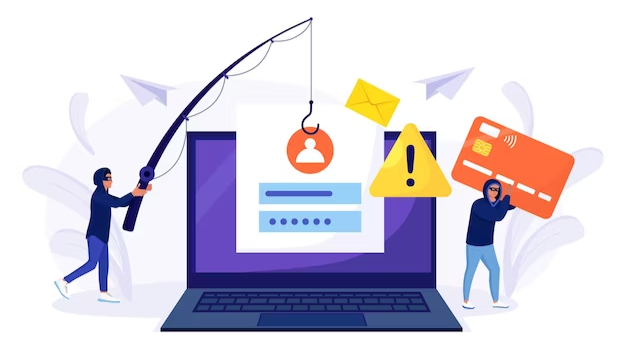
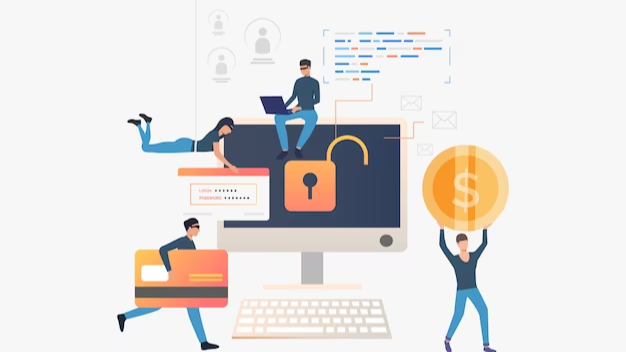

- Fake sender addresses
- Pressing appeals
- Typos, or dubious attachments
- Anti-virus,
- Anti-spam or firewall.
- Establishing reporting channels.
- Incident response plan or backup systems.
From Zero To Hero:
Simple Tips For Phishing Protection Training
Simple Tips For Phishing Protection Training
In today's increasingly digital world, cyber-attacks are becoming more frequent and sophisticated than ever before. As businesses rely more heavily on technology and store sensitive data online, the risks associated with cyber threats have grown exponentially.
As a result, it's essential for organizations to ensure that their employees are equipped with the knowledge and skills necessary to protect the company's assets from malicious attacks. They are the first line of defense against cyber-attacks, and they can be the heroes who save the day by spotting and preventing a cyber-attack before it causes significant damage.
However, many employees are not adequately trained or aware of the potential threats that they may face in their day-to-day work. This lack of knowledge can leave organizations vulnerable to cyber-attacks. Therefore, it's crucial for companies to invest in employee training programs that will help them become cyber defense superheroes.
Your network security and data privacy can be compromised by phishing attacks, among the most frequent and perilous cyber threats. Fraudulent emails or messages that mimic legitimate sources are used to lure your staff into clicking malicious links, opening infected attachments, or sharing sensitive information. In order to acquire further details, please visit the webpage phishprotection.com.

In order to safeguard your organization against phishing attacks, it is crucial to educate your employees on how to identify and thwart them. The following are some suggestions on how to accomplish this.
Provide Your Employees With Training On The Fundamentals Of Phishing:
To prepare your employees to identify and thwart phishing attacks, it is crucial to provide them with knowledge about the nature of phishing, its modus operandi, and the typical indications and outcomes of phishing.
To illustrate the concepts and instances of phishing, like
You have the option of employing online courses, webinars, videos, or presentations.
Additionally, you have the option to demonstrate to them the possible consequences of phishing, such as identity theft, ransomware attacks, or data breaches.
Conduct Simulated Phishing Campaigns To Evaluate Your Staff:
To equip your staff with the ability to identify and thwart phishing attacks, the next step involves conducting simulated phishing campaigns to evaluate their proficiency. Various tools or services can be employed to generate and dispatch authentic-looking phishing emails or messages to your employees, while their reactions are closely monitored.
By doing so, you can evaluate their consciousness level, detect their shortcomings, and offer them feedback and direction. Furthermore, incorporating gamification or incentives can inspire your team and foster a security-oriented environment.
Keep Your Employees Informed About The Most Recent Phishing Techniques And Strategie:

To ensure your staff is equipped to detect and prevent phishing attacks, it's crucial to keep them informed about the latest trends and tactics used by attackers. Phishing techniques are constantly evolving, with attackers adapting their methods to target various industries, platforms, or events.
To prevent phishing, which includes spear phishing, vishing, and COVID-19-related phishing, it's important to keep your staff informed and vigilant. You can share the latest news and tips on phishing prevention through newsletters, blogs, or podcasts.
Provide Your Employees With Appropriate Equipment And Materials:
Equipping your staff with the necessary tools and resources to train them to detect and prevent phishing attacks. Providing technical and operational support will enable your staff to identify and report phishing attempts effectively.
To prevent phishing emails or messages, you can utilize either software or hardware that filters, scans or blocks them. This can include
Additionally, you may implement policies or procedures outlining how to manage or escalate phishing incidents. This could involve
In summary, cybersecurity is an essential aspect of every organization, and the need for trained employees is critical in the fight against cyber threats. With the increasing rate of cyber attacks, employers must invest in cybersecurity training for their employees to become cybersecurity superheroes who can detect and prevent cyber threats before they occur. This training should include regular updates on the latest threats, simulated phishing exercises, and regular security awareness training to keep employees informed and vigilant.